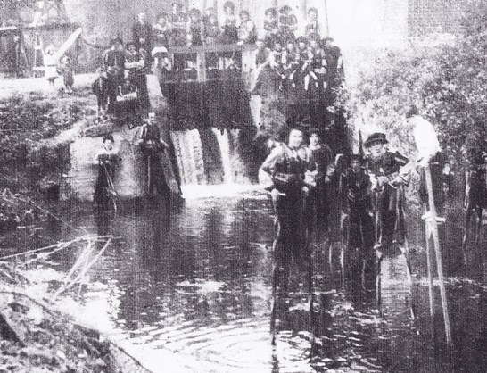
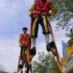
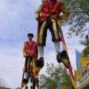

The Royal Stilts Walkers of Merchtem Take Over the World
Some traditions and customs live on in the leisure life of certain regions. This is how folklore forms—offering new generations a fascinating way to connect with the past. Stilts walking used to be a necessity, but today it’s a fun pastime. People started walking on stilts not just in Europe, but also in places like China, Japan, and Polynesia where it’s part of the folk culture. In America, the “sandwich man” on stilts is a familiar sight. All these styles of stilts walking have rich and varied histories.
Back in time, stilts were used to cross rivers or get dry over flooded areas. They were likely used all over the world before modern tools appeared. Evidence shows stilts were common in places like Namen on the Maas river, and since the 18th century, stilts have been spotted in the marshes of the Landes in Southern France. Stilts were also practical for work that was hard to reach otherwise—like plasterers using stilts in construction. In Kent, England, hop pickers walked on stilts to tie wires high on poles. Shepherds in different countries also used stilts to move among their flocks, giving them a better view.
Even though stilts stopped being a work tool when modern gear came along, they remain popular as a kids’ game and folk sport. Stilts walkers have featured for centuries in parades and circuses. The desire to stand taller than the crowd, to feel like giants, shows up all over—like the sandwich man in America, shamans among the Bantu, and the giants in Flemish parades...
Stilts Walking in Merchtem and Brabant Through the Ages
Stilts walking has deep roots in Brabant too. Archive records prove it was known here as far back as 1336. In the early 1500s, miniaturist Simon Bening (born 1483/84) painted a group of stilts walkers in a miniature showing a stilts fight, found in the Book of Hours (1505) of Philip the Fair (kept in Valencia). The famous Brabant painter Pieter Bruegel the Elder included two stilts walkers in his painting “Children’s Games” (1560), which shows 81 different folk games and is now in Vienna. Our stilts walkers still wear costumes inspired by those times, updated in the Belgian tricolor.
The Molenbeek, a shallow but wide stream that winds north through our town and empties into the Willebroek canal near Ruisbroek, flows through Langevelde, a hamlet of Merchtem. Often, the Molenbeek would flood and isolate Langevelde from the rest of the village. To cross the soggy ground, locals relied on stilts. In winter, they used ski-like sliding boards on the frozen ground. They also wore block shoes—this tradition explains why block walkers are part of the Royal Stilts Walkers.
 


The Founding of the Stilts Walkers of Merchtem
During World War II, leisure was limited under occupation in Belgium. People began organizing local fun activities, reviving old games. The youth of Langevelde started walking on stilts, and the adults joined in from 1942. They made stilts from ash and willow wood, reaching heights of one to three meters. A friendly competition grew around walking higher and higher. For fun, the stilts walkers of Langevelde held mock battles.
On June 10, 1945, a Liberation Parade passed through Merchtem. Each neighborhood or hamlet participated. Instead of building floats like most areas, Langevelde sent 25 stilts walkers dressed elegantly, representing five local families: Van Hoeymissen, Van Den Broek, Cooremans, Walravens, and Meysman. The crowd was amazed, and the stilts walkers were met with huge applause.
A few days later, the Folkloric Association Stilts Walkers of Merchtem was founded. The driving force and first president was Jan Vanderhasselt (b. Merchtem, 11/09/1907 – d. Ekeren, 01/06/1979), supported by his wife Jeannette Van Der Slagmolen (b. Asse, 28/11/1911 – d. Merchtem, 07/11/1968) and Florent, Jules, and Victorine Van Hoeymissen, who all helped grow the association.
Just two weeks after the successful Liberation Parade, the group was invited for the first time to perform: the Peace Parade in Wemmel. By February 1946, they appeared in Aalst’s carnival parade, where the Merchtem stilts walkers were honored as laureates. The future was bright, and invitations kept coming.